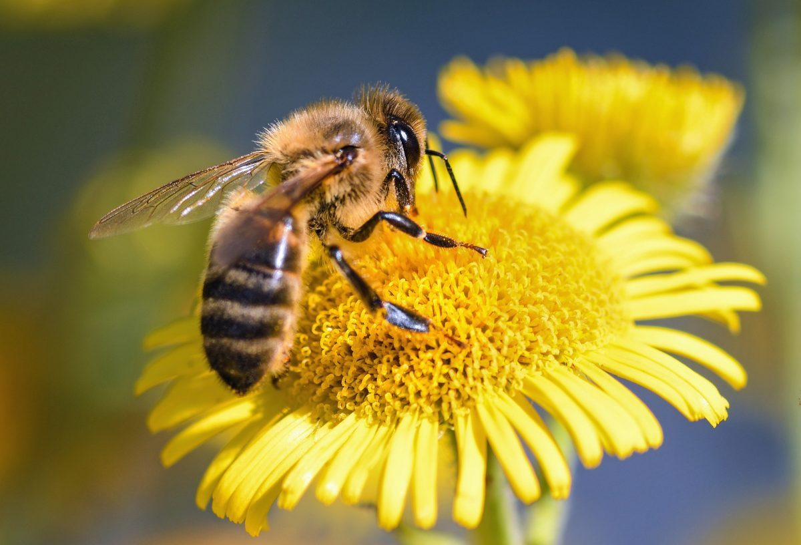

Las abejas son unos de los animales más importantes para el medio ambiente, ya que sin ellas, el 60 por ciento de las frutas y verduras que hoy consumimos, no existirían.
La presencia de los murciélagos en los ecosistemas tiene muchos beneficios, entre ellos se destacan: Control de plagas de insectos sin generar daños al ambiente, como si lo hacen los exterminadores. Dispersan semillas y polinizan flores de plantas de importancia ecológica. (Unas 500 especies de flores de todo el mundo dependen de los murciélagos para ser polinizadas) Su saliva contiene un anticoagulante Eliminan los mosquitos, que muchas veces son portadores del dengue, chikungunya y otras enfermedades.
El plancton engloba un gran número de las bacterias, virus, microbios y pequeños animales que se mueven arrastrados por las corrientes y vientos del océano, y que sirven de alimento a prácticamente toda vida marina. El plancton vegetal o fitoplancton produce la mitad del oxígeno que respiramos, al tiempo que absorbe gran parte del dióxido de carbono presente en la superficie y aminora el efecto invernadero.